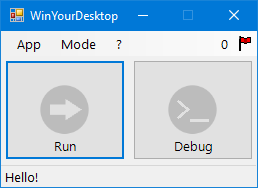

Ｄ Ｄ ～ ！
System Administrator, IT Technician, Programmer
Welcome!
All my life, I have always been interested in computers to their tiniest details. Thus why I do quite a few things all at once. Object-oriented programming (C#.NET), web programming (HTML5, CSS3, and Javascript), and scripting (Batch, Bash) are all things I like to do in my free time.
Install, configure, administrate networks (Routers, Active Directory), using virtualisation software (Virtualbox, Hyper-V, VMware Workstation and vSphere), repairing hardware, and offering technical support are also within my skill set.
I write a few articles on 0evil, ranging from C# and Rust programming, to various other topics related to software and hardware.
0xdd
Inspired by nano, 0xdd is a simple and interactive hex file viewer. (C#) |
WinYourDesktopWinYourDesktop is a Desktop file interpreter for Windows. (C#) |
FuckingClippy
FuckingClippy is a reincarnation of the long lost Office assistant as stand-alone software. (C#) |
JapWoahJapWoah lets you ｔｒａｎｓｆｏｒｍ text. (Javascript) |
Contact me
If you wish to visit my old website, you can do so here.